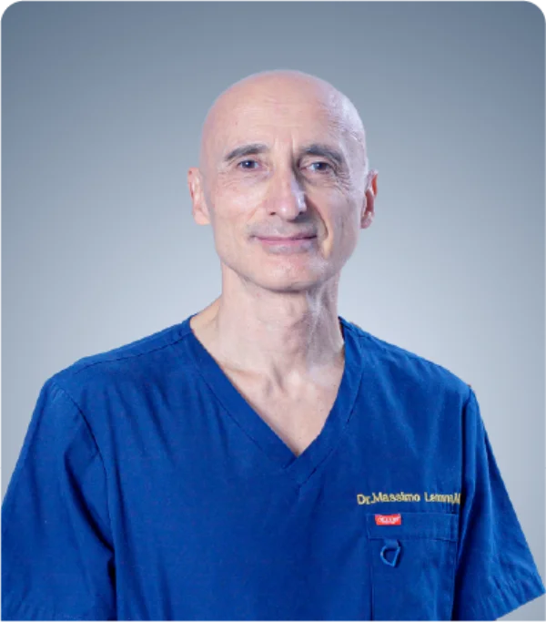
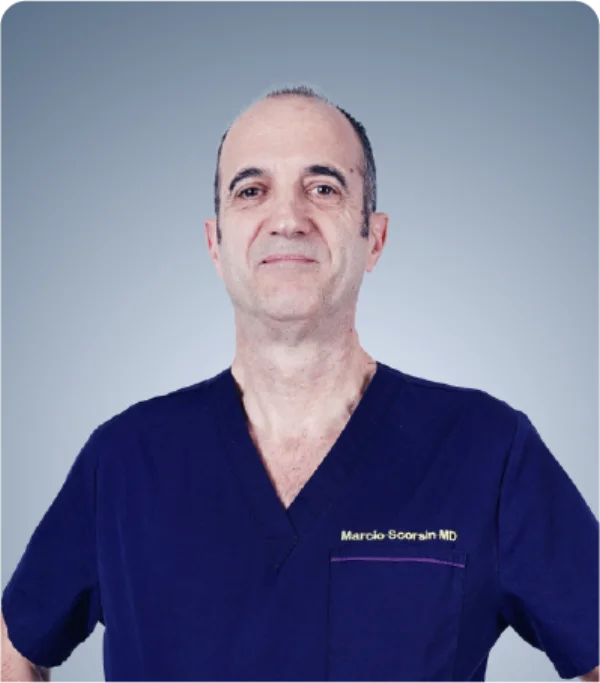
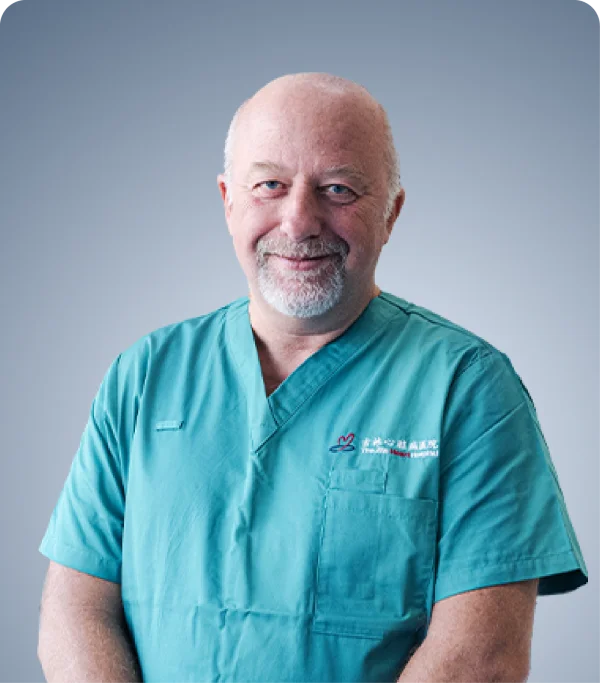
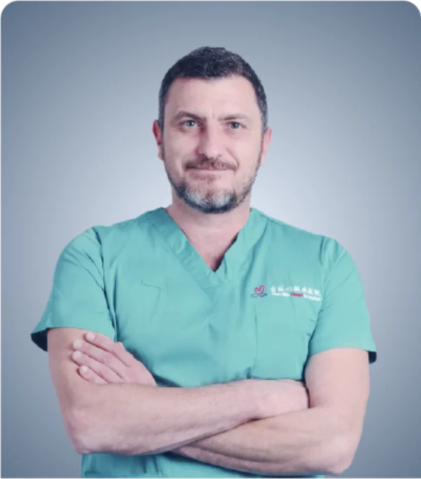
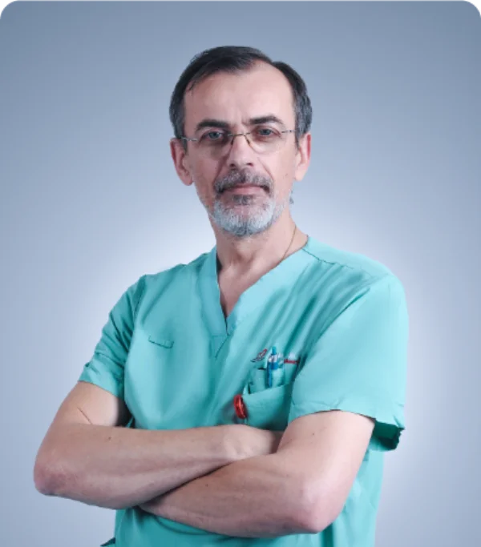

澳門橋霍頓有限公司整合優質國際醫療資源，依託吉林心臟病醫院的國際專家團隊，為高端客戶提供專業、值得信賴的心血管專科諮詢、跨境醫療評估、專家會診協調及健康管理支持。
合規聲明
澳門橋霍頓有限公司提供諮詢協調和專家資源匹配。本公司不提供直接的醫療治療服務。服務包括：專家資源協調、醫療諮詢促進、健康管理建議。
心臟外科
複雜心血管疾病的高級手術評估和干預策略。
心臟內科
全面的心血管診斷、慢性病管理和預防性護理。
麻醉科
圍手術期安全評估、風險緩解和高級麻醉支持。

心臟外科
Massimo Giovanni Lemma
心臟外科主任
Massimo Giovanni Lemma 醫生在心臟外科領域具有無與倫比的領導力，為我們的顧問委員會帶來了數十年的國際臨床經驗。他專注於為面臨複雜心血管疾病的高端患者提供全面的術前評估和專家會診支持。他的權威指導確保每位患者都能獲得針對其獨特解剖和臨床需求量身定制的、經過精心評估的世界級手術策略，從而彌合全球卓越醫療與個性化護理之間的差距。
心臟內科
Francesco Lavarra
心臟內科主任
作為心臟內科主任，Francesco Lavarra 醫生在心血管醫學領域提供深刻的專業判斷和豐富的經驗。他是慢性病管理和複雜心臟診斷領域的權威。Lavarra 醫生提供關鍵的專科會診支持，指導高端客戶完成複雜的健康評估，並確保他們的長期心臟護理策略符合國際最高醫療卓越標準。

心臟外科
Marcio Scorsin
心臟外科專家
Marcio Scorsin 醫生是一位傑出的心臟外科專家，以其深厚的專業知識和對多學科合作的承諾而聞名。他在提供高價值的跨境醫療會診方面發揮著關鍵作用，確保高端客戶受益於綜合的、最先進的外科視角。他的方法強調嚴格的臨床評估和與國際醫療團隊的無縫協調，以優化治療路徑並提高整體患者安全和預後。

心臟外科
Andrea Mangini
心臟外科專家
Andrea Mangini 醫生為我們的國際顧問小組帶來了卓越的心血管外科專業知識。他致力於高端患者會診，擅長在協作環境中工作，與全球醫療團隊密切合作設計複雜的干預策略。他對先進手術技術和以患者為中心的護理模式的深刻理解，使他能夠為應對複雜心臟挑戰的個人提供寶貴的第二意見和戰略性健康管理建議。

心臟內科
Vasile Sirbu
心臟內科專家
Vasile Sirbu 醫生是一位受人尊敬的心臟內科專家，專注於全面的心血管評估和高端健康管理支持。他促進高水平的跨境專家會診，為客戶提供有關其心臟健康和預防性護理策略的詳細見解。Sirbu 醫生細緻的分析能力和對患者福祉的奉獻精神，使他成為尋求權威指導和優化長期心血管管理計劃的個人的不可或缺的資源。

麻醉科
Kristian Desa
麻醉科專家
Kristian Desa 醫生是一位頂尖的麻醉科專家，提供關鍵的圍手術期安全評估和高級麻醉支持。他的專業知識對於評估患者是否準備好接受複雜的心血管干預至關重要。憑藉在國際醫療合作方面的深厚背景，Desa 醫生確保所有會診策略都將患者安全、風險緩解和最佳恢復路徑放在首位，為接受重大醫療評估的高端客戶帶來安心。
諮詢流程
提交諮詢
提供您的初步醫療信息和具體需求。
需求評估
我們的團隊審查您的案例以確定最合適的專家。
專家匹配
與領先的國際心血管專家聯繫。
私人會診協調
促進全面的醫療審查和戰略規劃。